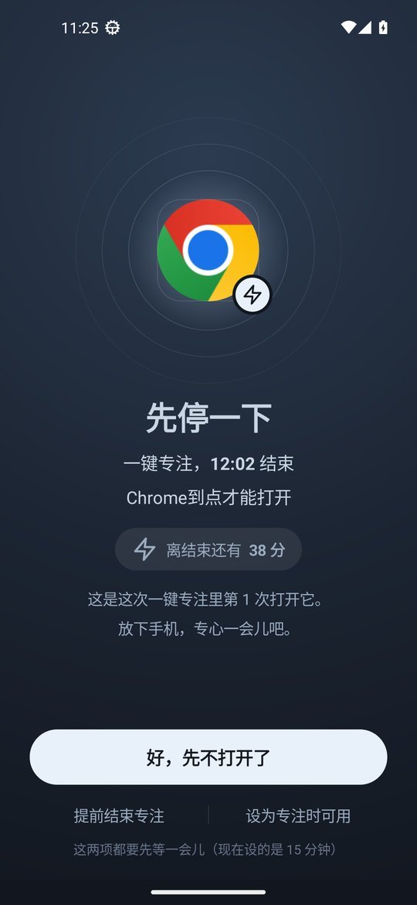
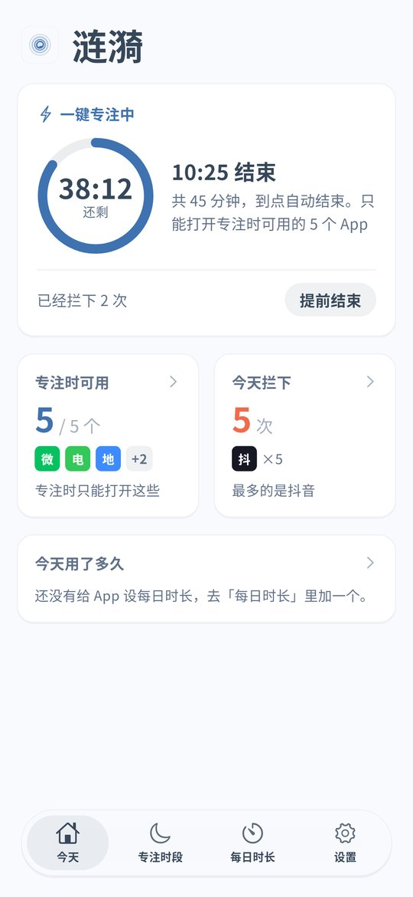
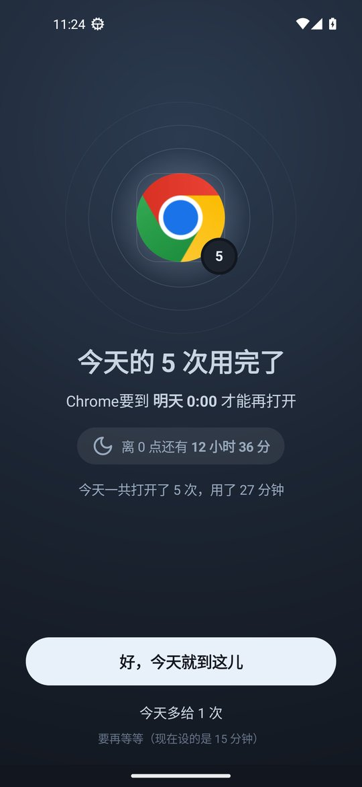

Still Scrolling After You Get Home
On the way home a lot of parents plan to spend the evening with their kids. Then they sit down on the sofa, open short videos, and look up at nine o'clock. Kids notice. They come home from school and reach for a tablet or phone first, and when you ask them to stop they say you are on yours too. What tends to work is setting rules together and letting the phone hold everyone to them. The first part below is for adults limiting their own evenings, and the second part is for parents setting after school rules. Android and iPhone are both covered.
See it in 20 seconds
The demo shows the Android v0.1.8 screens with the Chinese interface. The last card lists what Android and iPhone each have. GIF version




Adults: keep a few evening hours for family
Create an evening focus schedule
For example 19:00 to 21:30 every day. Put short video, live stream, shopping and game apps in it. Leave messaging and the phone app out so family can still reach you.
Home at a different time each day? Use quick focus
Android v0.1.8 has quick focus on the home screen. Tap it when you walk in, pick 2 hours or a custom length, and only the apps in your focus list stay open until it ends.
Heavy daytime use? Add a daily limit
On Android each app can have a daily limit, such as 30 minutes for short videos. Once it is used up during the day, the app stays closed in the evening.
Opening apps without thinking? Set an open limit
Android v0.1.8 can cap how many times a day an app opens and add a short pause before it opens. A few seconds of waiting is often enough to put the phone down.
Give the unlock code to your partner
Ending early or adding time needs a cooldown or the unlock code. If your partner or another family member holds the code, it is harder to give in on a whim.
iPhone: schedules
The iPhone version is v0.1.5. Put short video and game apps into an evening schedule, and on iOS 16 and later the system blocks them in the background. The unlock code works there too. Daily limits, open limits and quick focus are Android only for now.
Parents: phone rules after school
No games until homework is done
Create an after school schedule on your child's phone, for example 16:30 to 19:00, with games and videos in it. After homework, open them up for the time you agreed on.
Use the same schedule for the whole family
Put the same evening schedule on your own phone. Kids are more willing to go along when they see the adults keeping the rule. For meals, see the mealtime page.
Done with one game for good? Set 0 minutes
On Android a daily limit can be 0 minutes. That game stays closed all day, every day, and other apps are not affected.
Keep WeChat, turn off Channels and Moments
If your child needs WeChat to reach family, Android can turn off only WeChat Channels and Moments while chats and calls keep working. See the WeChat Channels page.
The child cannot undo it
The parent keeps the unlock code, turns on uninstall protection on Android and can add strict mode. Android timing uses device uptime, so moving the clock forward does not end anything early. See the clock change page.
iPhone: block games and videos on a schedule
If your child uses an iPhone, block games and videos after school and at bedtime. With the block on deleting apps turned on, long press removal does not work. See the iPhone page.
Setup steps
Install Ripple
On Android install the latest APK and turn on the accessibility service. If you have an older version, update to v0.1.13 from Settings › About › Check for updates. On iPhone you need iOS 16 or later and Screen Time permission.
Agree on the evening hours
Sit down with your kids and pick the times, such as after school until homework is done and family time until bed, then create a schedule for each.
Choose the apps
Put short video, live stream and game apps into schedules or daily limits. Leave messaging, the phone app and study apps out.
Set the unlock code
On your own phone give the code to your partner. On a child's phone keep it yourself.
Turn on uninstall protection
Turn on Anti-Uninstall on Android and the block on deleting apps on iPhone.
FAQ
Will calls and messages from family be blocked in the evening?
No. Apps you leave out of the schedule keep working. Android can also turn off only WeChat Channels and Moments.
Can weekends use different hours?
Yes. Schedules can be set per day of the week, so create a separate one for weekends. See the weekend page.
Can I open things up for a short while?
Yes, after the cooldown or with the unlock code. The cooldown gives you a moment to think it over.
Does the iPhone version have daily limits or quick focus?
Not yet. The iPhone version v0.1.5 has schedules, the block on deleting apps, clock change protection and the unlock code.
Does it cost money or need an account?
It is free with no ads and no account. Settings stay on the phone.